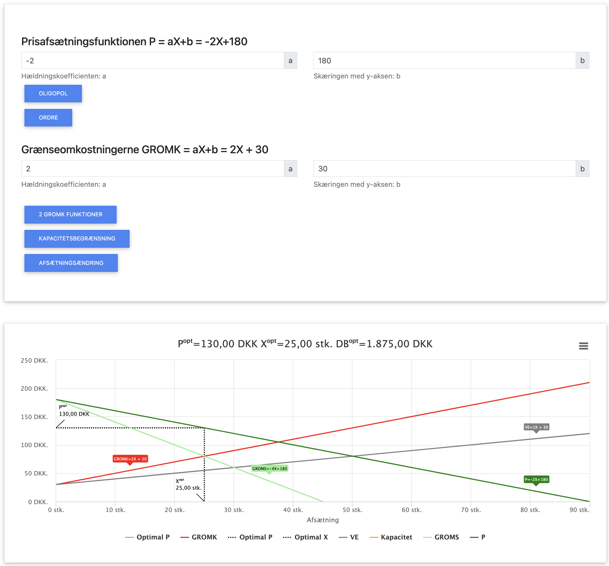
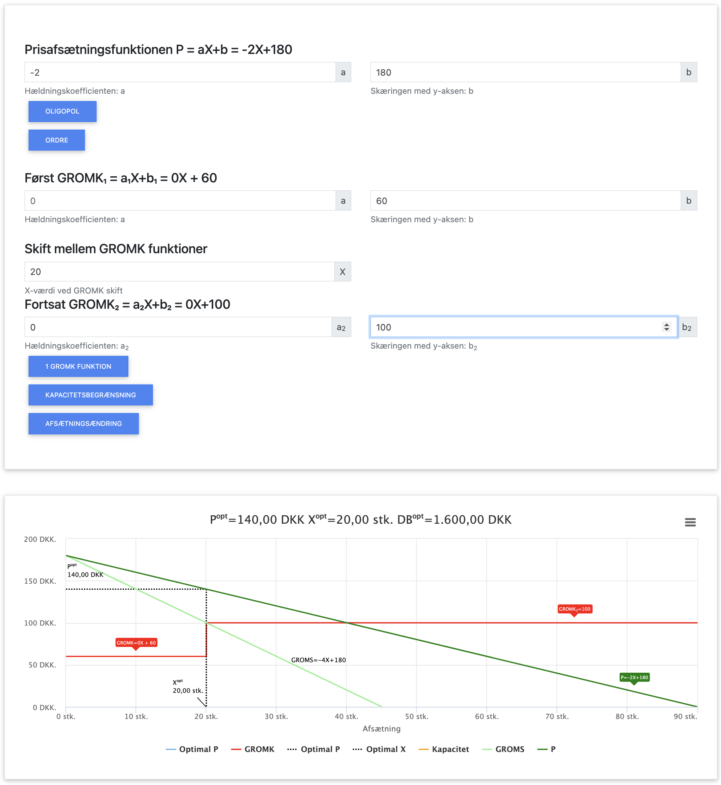

Monopolistisk Konkurrence

Monopolistisk konkurrence er en markedsform, der kombinerer elementer fra både fuldkommen konkurrence og monopol. Der er mange virksomheder på markedet, men deres produkter er differentierede (heterogene), hvilket giver hver virksomhed en vis grad af markedsmagt.
Hovedkarakteristika ved monopolistisk konkurrence:
- Mange små virksomheder
- Differentierede produkter
- Fri markedsadgang
- Begrænset markedsmagt
- Virksomheder er prisansættere (ikke pristagere)
I dette kapitel benytter vi følgende forkortelser:
- P = Pris
- X = Mængde
- OMS = Omsætning (P × X)
- VO = Variable omkostninger (VE × X)
- FO = Faste omkostninger
- VE = Variable enhedsomkostninger (VO / X)
- GROMS = Grænseomsætning (OMS' = ændring i omsætning ved ændring i afsat mængde X)
- GROMK = Grænseomkostninger (TO' = ændring i totale omkostninger ved ændring i afsat mængde X)
- DB = Dækningsbidrag (OMS - VO)
- TO = Totale omkostninger (FO + VO)
- TE = Totale enhedsomkostninger (TO / X)
I dette kapitel fokuserer vi på:
- Hvordan virksomheder under monopolistisk konkurrence optimerer produktion
- Produktdifferentiering og dens betydning for virksomheden
- Forskellen mellem kort og lang sigt under monopolistisk konkurrence
- Beregning af optimal mængde, pris, omsætning og resultat
- Et gennemgående beregningseksempel
Grundlæggende principper for monopolistisk konkurrence
Under monopolistisk konkurrence gælder følgende principper:
- Virksomheden har sin egen efterspørgselskurve på grund af produktdifferentiering
- Der eksisterer en negativ sammenhæng mellem pris og efterspurgt mængde (faldende efterspørgselskurve)
- Grænseomsætningen (GROMS) er altid lavere end prisen, ligesom ved monopol
- Den optimale mængde findes hvor GROMS = GROMK
- På lang sigt elimineres økonomisk profit pga. fri adgang til markedet
Produktdifferentiering
Produktdifferentiering giver virksomheden mulighed for at skille sig ud fra konkurrenterne. Dette kan opnås gennem:
- Fysiske forskelle: Design, kvalitet, egenskaber, smag
- Serviceforskelle: Kundeservice, levering, garanti
- Lokationsforskelle: Butikkens placering
- Brandforskelle: Image, markedsføring, omdømme
Jo mere differentieret produktet er, desto mindre prisfølsom bliver efterspørgslen, og desto mere markedsmagt får virksomheden.
Optimering under monopolistisk konkurrence
For at maksimere profit skal en virksomhed under monopolistisk konkurrence producere den mængde, hvor:
GROMS = GROMK
Dette er samme optimeringsbetingelse som under monopol. Forskellen er, at efterspørgselskurven er mere elastisk (flad) under monopolistisk konkurrence end under monopol, hvilket begrænser virksomhedens prissætningsmagt.
Kort sigt vs. lang sigt
Der er en vigtig forskel mellem kort og lang sigt under monopolistisk konkurrence:
På kort sigt:
- Virksomheden kan opnå økonomisk profit (P > TE)
- Eller have et økonomisk tab (P < TE)
- Hvis P > AVC (gennemsnitlige variable omkostninger), fortsætter produktionen
På lang sigt:
- Nye virksomheder kan frit træde ind på markedet, hvis der er profit
- Dette øger udbuddet og reducerer efterspørgslen for den enkelte virksomhed
- Til sidst ender virksomheden med at have normal profit (P = TE)
- Virksomheden producerer med overskudskapacitet (producerer mindre end den omkostningsminimerende mængde)
Vigtig bemærkning om optimering:
I dette kapitel fokuserer vi primært på optimering på kort sigt, hvor virksomheden maksimerer sin profit ved at producere den mængde, hvor GROMS = GROMK. Dette er den umiddelbare optimeringsregel, som virksomheden skal følge.
| Branche | Kort sigt | Lang sigt | Eksempel |
|---|---|---|---|
| Specialkaffe (Danmark) | The Coffee Collective i København kunne tage høje priser og opnå profit pga. differentiering og få konkurrenter. | Med tiden åbnede flere specialkaffebarer, og profitten faldt til normalt niveau. | The Coffee Collective måtte åbne flere lokationer og udvide med engrossalg for at overleve. |
| Gourmetburgere (Danmark) | Gasoline Grill startede som en unik koncept-burgerbar med høj kvalitet og kunne tage høje priser. | Efterhånden kom konkurrenter som Cock's & Cows og Tommi's Burger Joint på markedet. | Gasoline Grill måtte ekspandere til flere lokationer og fokusere mere på deres differentiering. |
| Elbiler (International) | Tesla havde i flere år en unik position med høj profit på elbilmarkedet. | Efterhånden lancerede traditionelle bilproducenter (VW, BMW, Ford) deres egne elbiler. | Tesla reducerede priserne og fokuserede på stordriftsfordele gennem gigafabrikker. |
| Smartphone Apps (International) | Tidlige succesfulde apps som Angry Birds kunne tage høje priser eller generere betydelig indtægt gennem annoncer/køb i app. | App-markedet er blevet oversvømmet med lignende produkter, hvilket har reduceret indtjeningen. | Rovio (Angry Birds) måtte udvide til merchandise, film og finde nye indtægtskilder. |
| Mikrobryggeri (Danmark) | Mikkeller startede som unik producent af kvalitets-specialøl og kunne tage høje priser. | Hundredvis af mikrobryggerier er siden kommet til, hvilket har øget konkurrencen. | Mikkeller måtte udvide med egne barer og international distribution for at fastholde vækst. |
| Streaming-tjenester (International) | Netflix havde tidligt næsten monopol på streaming og kunne vækste kraftigt. | Disney+, HBO Max, Amazon Prime og andre konkurrenter indtog markedet. | Netflix måtte investere massivt i originalt indhold og ekspandere internationalt. |
Gennemgående beregningseksempel
Lad os arbejde med et konkret eksempel på en virksomhed under monopolistisk konkurrence:
Forudsætninger:
- Efterspørgselsfunktion: P = -2X + 180
- Faste omkostninger (FO) = 1.800 kr.
- Variable enhedsomkostninger (VE) = X + 30 kr. pr. enhed

Her ses løsningen på opgaven i appen.
App beregning af monopolistisk konkurrence
Trin 1: Finder omsætnings- og grænseomsætningsfunktionerne
Omsætning: OMS = P × X = (-2X + 180) × X = -2X² + 180X
Grænseomsætning: GROMS = den afledte af OMS med hensyn til X = -4X + 180
Trin 2: Finder omkostnings- og grænseomkostningsfunktionerne
Metode 1: Ud fra VO og TO
Variable omkostninger: VO = VE × X = (X + 30) × X = X² + 30X
Totale omkostninger: TO = FO + VO = 1.800 + X² + 30X
GROMK = den afledte af TO med hensyn til X = 2X + 30
Metode 2: Ud fra VE
GROMK = VE + X × (ændring i VE pr. enhed)
VE = X + 30
Ændring i VE pr. enhed = 1
GROMK = (X + 30) + X × 1 = X + 30 + X = 2X + 30
Trin 3: Bestemmer den optimale produktionsmængde
Optimalitetsbetingelse: GROMS = GROMK
-4X + 180 = 2X + 30
-4X - 2X = 30 - 180
-6X = -150
X = 150 ÷ 6 = 25 enheder
Trin 4: Beregner den optimale pris
P = -2X + 180 = -2 × 25 + 180 = -50 + 180 = 130 kr.
Trin 5: Beregner overskud ved optimal produktion
X = 25 enheder
P = 130 kr.
OMS = P × X = 130 × 25 = 3.250 kr.
VE = X + 30 = 25 + 30 = 55 kr. pr. enhed
VO = VE × X = 55 × 25 = 1.375 kr.
DB = OMS - VO = 3.250 - 1.375 = 1.875 kr.
OVS = DB - FO = 1.875 - 1.800 = 75 kr.
Fortolkning: Den optimale pris er 130 kr., og den optimale produktionsmængde er 25 enheder. Ved denne pris og mængde opnår virksomheden et overskud på 75 kr.
Opsummering af eksemplet
| Parameter | Formel | Værdi |
|---|---|---|
| Efterspørgselsfunktion | P = -2X + 180 | - |
| Grænseomsætning (GROMS) | -4X + 180 | 80 kr. (ved X=25) |
| Grænseomkostninger (GROMK) | 2X + 30 | 80 kr. (ved X=25) |
| Optimal mængde (X) | GROMS = GROMK | 25 enheder |
| Optimal pris (P) | P = -2X + 180 | 130 kr. |
| Variable enhedsomkostninger (VE) | X + 30 | 55 kr. (ved X=25) |
| Variable omkostninger (VO) | X² + 30X | 1.375 kr. |
| Faste omkostninger (FO) | Givet | 1.800 kr. |
| Totale omkostninger (TO) | FO + VO | 3.175 kr. |
| Omsætning (OMS) | P × X | 3.250 kr. |
| Dækningsbidrag (DB) | OMS - VO | 1.875 kr. |
| Resultat | DB - FO | 75 kr. |
Kapacitetsbegrænsning ved optimering
I praksis kan virksomheder under monopolistisk konkurrence have kapacitetsbegrænsninger. Lad os undersøge hvad der sker, hvis vores virksomhed fra eksemplet har en maksimal produktionskapacitet på 20 enheder.
Kapacitetsbegrænsning
Antag at virksomheden har en kapacitetsbegrænsning på 20 enheder. Det betyder, at selvom den optimale produktionsmængde er 25 enheder, kan virksomheden maksimalt producere 20 enheder.
Ved X = 20:
P = -2X + 180 = -2 × 20 + 180 = -40 + 180 = 140 kr.
GROMS = -4X + 180 = -4 × 20 + 180 = -80 + 180 = 100 kr.
GROMK = 2X + 30 = 2 × 20 + 30 = 40 + 30 = 70 kr.
Beregning af overskud:
X = 20 enheder
P = 140 kr.
OMS = P × X = 140 × 20 = 2.800 kr.
VE = X + 30 = 20 + 30 = 50 kr. pr. enhed
VO = VE × X = 50 × 20 = 1.000 kr.
DB = OMS - VO = 2.800 - 1.000 = 1.800 kr.
OVS = DB - FO = 1.800 - 1.800 = 0 kr.
Fortolkning: Med kapacitetsbegrænsningen producerer virksomheden 20 enheder i stedet for 25, hvilket resulterer i et nulpunktsresultat (break-even). Dette er 75 kr. mindre end ved den optimale mængde på 25 enheder. Bemærk at GROMS > GROMK ved kapacitetsgrænsen, hvilket betyder at virksomheden ville tjene mere på at producere mere, hvis kapaciteten tillod det.

Her ses løsningen på opgaven i appen.
App beregning af monopolistisk konkurrence
GROMK som trappefunktion
Antag at virksomhedens omkostningsstruktur er anderledes, med konstante marginale omkostninger inden for to intervaller:
- For X ≤ 20: GROMK = 60 kr.
- For X > 20: GROMK = 100 kr.
Denne omkostningsstruktur kunne skyldes overarbejdsbetaling efter 20 enheder.
Optimal produktion:
Vi skal sammenligne GROMS ved X = 20 med GROMK i begge intervaller:
GROMS ved X = 20: -4 × 20 + 180 = -80 + 180 = 100 kr.
Før X = 20: GROMS > GROMK (100 kr. > 60 kr.) → Producér mere
Efter X = 20: GROMS = GROMK (100 kr. = 100 kr.) → Optimal produktion ved X = 20
Den optimale produktionsmængde er præcis 20 enheder, hvor GROMK skifter fra 60 kr. til 100 kr.
Beregning af optimal pris og overskud:
P = -2X + 180 = -2 × 20 + 180 = -40 + 180 = 140 kr.
OMS = P × X = 140 × 20 = 2.800 kr.
VO = 60 × 20 = 1.200 kr. (da GROMK = VE = 60 kr. for alle enheder op til 20)
DB = OMS - VO = 2.800 - 1.200 = 1.600 kr.
OVS = DB - FO = 1.600 - 1.800 = -200 kr.
Fortolkning: Med den trinvise omkostningsstruktur er den optimale
produktionsmængde 20 enheder med en pris på 140 kr., hvilket resulterer i et underskud på
200
kr. Dette er dårligere end med den oprindelige omkostningsstruktur, hvor overskuddet var 75
kr. ved 25 enheder.
På kort sigt bør virksomheden dog fortsætte produktionen, da
dækningsbidraget er
positivt.

Her ses løsningen på opgaven i appen.
App beregning af monopolistisk konkurrence
Sammenfatning af kapitlet
Under monopolistisk konkurrence er optimeringsreglen: Producér den mængde, hvor GROMS = GROMK. Dette er samme regel som under monopol, men med en vigtig forskel på lang sigt.
Nøgleobservationer:
- Hvis GROMS > GROMK, bør virksomheden øge produktionen
- Hvis GROMS < GROMK, bør virksomheden reducere produktionen
- Hvis GROMS = GROMK, har virksomheden fundet den optimale produktionsmængde
- P > GROMS ved alle produktionsmængder (ligesom ved monopol)
- På kort sigt kan virksomheden have økonomisk profit eller tab
- På lang sigt vil profit eller tab forsvinde, og P = TE (normal profit)
- For lineære funktioner gælder:
- Når P = a - bX, er GROMS = a - 2bX (dobbelt så stejl hældning)
- Når VE = c + dX, er GROMK = c + 2dX (dobbelt så stejl hældning)